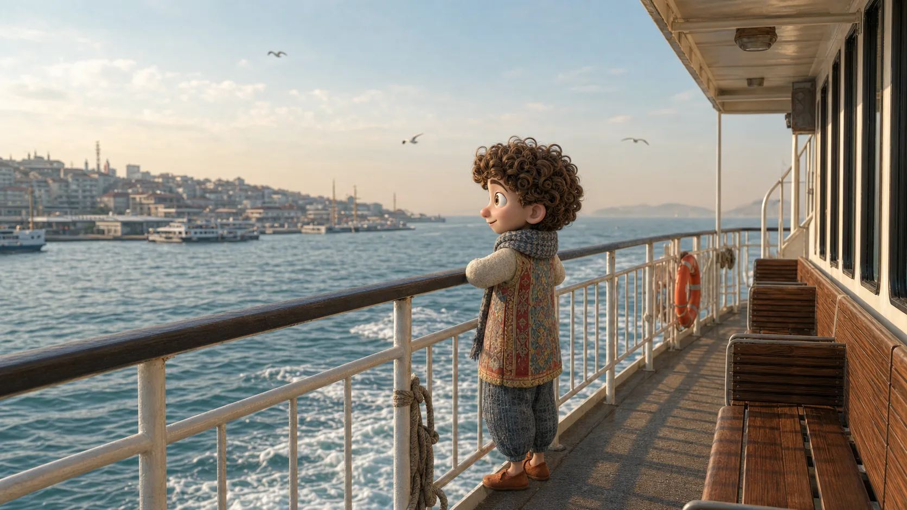
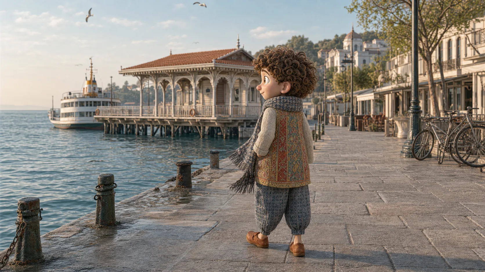
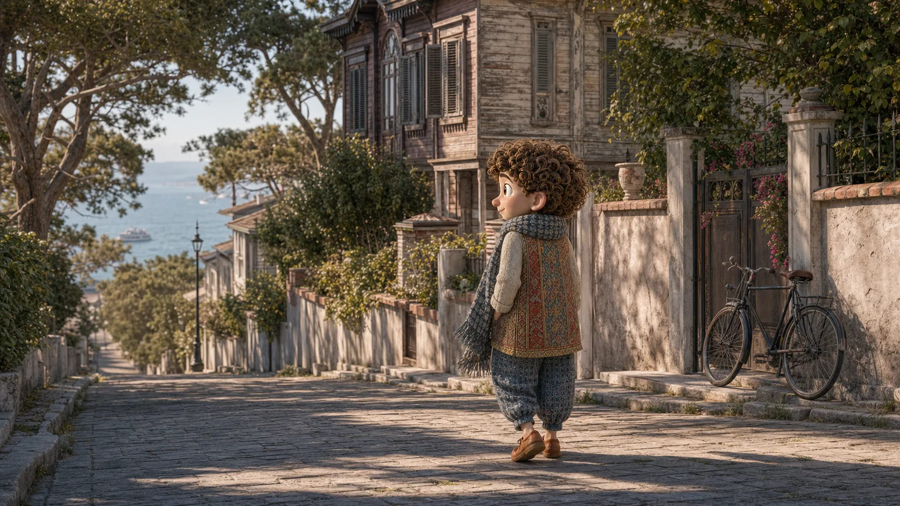
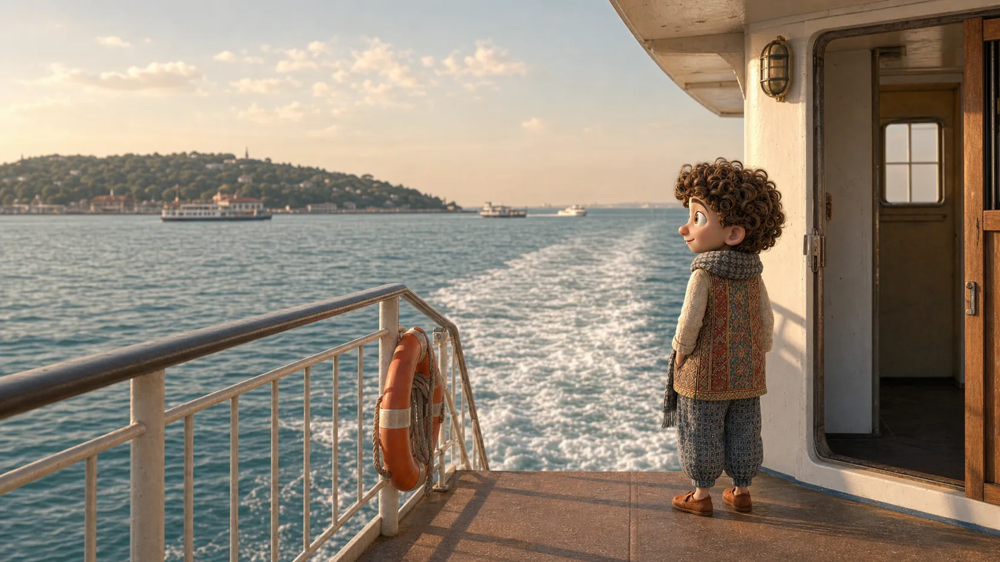

Ez a hajó Büyükadára megy?

Történet 07 · Egy nap Büyükadán
Ma nem érkezünk meg gyorsan. Ezért fog megmaradni.
A hajóút nem üres idő Büyükada előtt. Itt kezd el lassulni a város, és vele együtt mi is.
A
Maradjunk még a fedélzeten →Gyere. Most nem kell sietnünk. A hajó is tudja az utat.
Az út is a nap része
Előbb bizonyosságot kérsz. Aztán hagyod, hogy a part eltávolodjon.
Nem minden hajó ugyanoda indul, és a menetrend változhat. Egy rövid kérdéssel biztos lehetsz benne, hogy jó helyen vársz.
Mennyi ideig tart az út?

A kikötő az első tájékozódási pont
Jegyezd meg, hová kell majd visszatalálnod. Utána szabad a nap.
A móló nemcsak érkezés. Ez lesz a biztos pontod akkor is, amikor a délutáni utcák már összefolynak.
Ha elveszne az irányİskeleye nasıl dönebiliriz?
Hogyan tudunk visszajutni a kikötőhöz?
A
Induljunk a saját tempónkban →Most már tudjuk, hová térünk vissza. Nézzük meg, merre esik jól elindulni.

Most te választod meg a tempót
A sziget nem attól lassú, hogy nincs rajta semmi. Hanem attól, hogy végre észreveszed.
Egy kopott zsalut, a fenyők árnyékát, egy biciklit a kapunál. Nem kell minden utcát bejárni ahhoz, hogy a nap a tiéd legyen.
Ezt most már te mondodBiraz daha yavaş yürüyelim mi?
Sétáljunk egy kicsit lassabban?
A
Vigyünk időt a visszaútra is →Persze. Van időnk. Ha megállsz nézelődni, én is megállok.

A visszaút nem a nap vége
Most már ugyanazt a vizet másképp nézed.
Reggel azt figyelted, mikor érünk oda. Most azt, mennyi minden fért el abban, hogy nem siettünk.
Mielőtt elindulsz sétálniSon vapur saat kaçta kalkıyor?
Hány órakor indul az utolsó hajó?
A
Nézzük meg, mi jön velünk →Nem kell visszasietnünk a városba. De jó tudni, melyik hajóval térünk haza.
Amit most már biztonsággal meg tudsz kérdezni
El tudsz indulni, visszatalálsz, és közben a saját tempódban maradsz.
Ez az öt mondat megadja a biztos pontokat. Közöttük már nem kell mindent előre megtervezned.
Ez a hajó Büyükadára megy?
Mennyi ideig tart az út?
Hogyan jutunk vissza a kikötőhöz?
Sétáljunk egy kicsit lassabban?
Hány órakor indul az utolsó hajó?
Az öt mondatot egy mozdulattal elteheted Ali zsebébe.
Vissza Ali várostérképéhez →